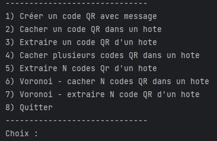

Description
The goal of this project was to implement a program with some features to manipulate/hide QR codes.
The implemented features are listed below :
- Generate a QR code
- Hide a QR code in a host QR
- Extract a QR code from an augmented QR
- Hide multiple QR codes in a host QR
- Extract multiple QR codes from an augmented QR

Generate QR code
The QR code is generated with the qrcode library .
The user enters two parameters: the name of the QR code to save as a .png file and the text related to this QR code.
You can see on the left two generated QR codes with the text "i'm a normal qr!" and "shh i'm a secret qr!", you can try it out!
Hide QR code
Now that we have two separated QR codes, let's hide the secret one in the host and take a look at the augmented qr created.
The user choose the host, the QR code to hide and the number of voronoi's seeds.
The hiding process use a Voronoi diagram approach. The Voronoi key is stored in a text file for reference. The augmented QR code is then displayed and saved as an image.
The image on the right shows us the QR code augmented using the QR codes from above.

Extract QR code
The extraction involves two main parts: selecting the augmented QR code and its associated Voronoi key, then using that key to recover the secret QR code.
This process uses the Voronoi key to identify and combine binary pixel values from the augmented QR code, reconstructing the hidden original image.
You can see the extraction process of the augmented qrand the final result in the pictures on the left. You can even test it with a QR reader!